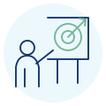
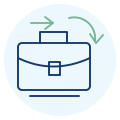
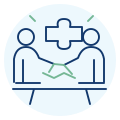

Een maatwerktraining begint bij wat er in de praktijk anders moet kunnen.
Geen organisatie, doelgroep of werksituatie is hetzelfde. Daarom ontwerpen we vanuit de ontwikkelvraag en de context waarin deelnemers het geleerde moeten toepassen. Inhoud, casuïstiek, werkvormen, digitale ondersteuning, observatie en evaluatie worden daarop afgestemd.
Bespreek jouw ontwikkelvraagMeer dan aangepaste voorbeelden.
Bij maatwerk verbinden we de gewenste werkprestatie aan leerresultaten, oefening, observatie en transfer naar de werkcontext.
Als de ontwikkelvraag specifiek is voor jouw organisatie.
Samen onderzoeken we wat medewerkers nodig hebben en welke aanpak daarbij past. Naast training kunnen ook duidelijkere werkafspraken, ondersteuning of aanpassingen in het werk nodig zijn.

Specifieke leerbehoefte
Je medewerkers moeten iets leren waarvoor een standaardtraining onvoldoende aansluit. Je zoekt een training die volledig is afgestemd op je eigen leerbehoeften en dagelijks werk.
Jullie eigen werkpraktijk
Je wilt verdiepend oefenen met jullie situaties of werkwijze, zodat medewerkers de vertaalslag naar hun werk direct kunnen maken.

Een nieuwe werkwijze
Er verandert iets in jullie organisatie. Je wilt medewerkers voorbereiden op wat dit vraagt van bijvoorbeeld hun communicatie, samenwerking of professioneel handelen.

Verschillende leerbehoeften
Je medewerkers verschillen in ervaring, functie of beginniveau. Je zoekt een training met een passende opbouw, begeleiding en uitdaging.
Van ontwikkelvraag tot toepassing in het werk.
Meten is geen losse eindstap. Vooraf bepalen we wat deelnemers moeten kunnen, hoe we dat tijdens de training observeren en hoe toepassing na afloop wordt gemeten.
Ontwikkelvraag
Vraagstuk scherpstellen en onderscheid maken tussen een leerbehoefte en andere beïnvloedende factoren.
Werkprestatie
Gewenst gedrag en concrete leerresultaten formuleren.
Ontwerp
Casuïstiek, leeractiviteiten, ELO, observatie en feedback passend maken.
Uitvoering
Actief oefenen en waar passend met observatieformulieren ontwikkeling vastleggen.
Afronding
Reflectie, eindmeting en afspraken over toepassing in de praktijk.
1 jaar support
De ELO blijft beschikbaar voor hulpmiddelen en ondersteuning in het werk.
Praktijkmeting
Na een afgesproken periode nagaan in hoeverre gewenst gedrag in het werk wordt toegepast.
Rapportage & evaluatie
Resultaten samenbrengen en vervolg bespreken.
Wat wordt gemeten?
- Ontwikkeling tijdens de training, waar passend met observaties.
- Toepassing in de werkcontext via een afzonderlijk meetmoment na de training.
- Organisatieresultaten alleen wanneer vooraf passende indicatoren zijn afgesproken.
Geen overspannen effectclaim
Toepassing hangt ook af van motivatie, gelegenheid, steun, systemen en andere kenmerken van de werkomgeving. Daarom koppelen we conclusies aan de gegevens die daadwerkelijk zijn verzameld.
Een ontwikkelvraag die niet in een standaardtraining past?
Neem contact op voor een verkennend en verdiepend gesprek. Daarin brengen we de ontwikkelvraag, leerbehoefte en werkcontext in beeld en bespreken we welke aanpak past.